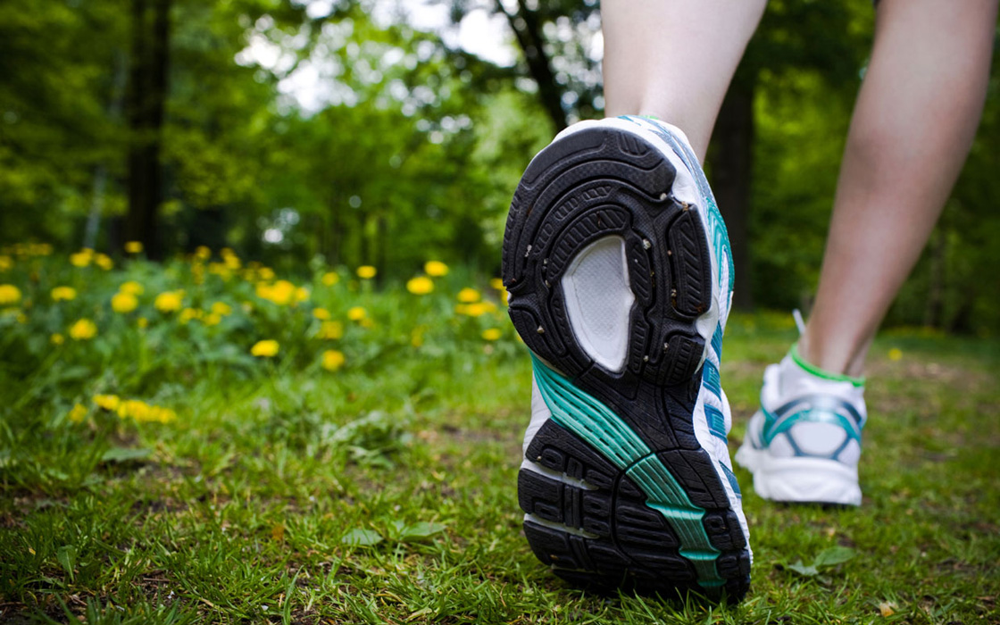
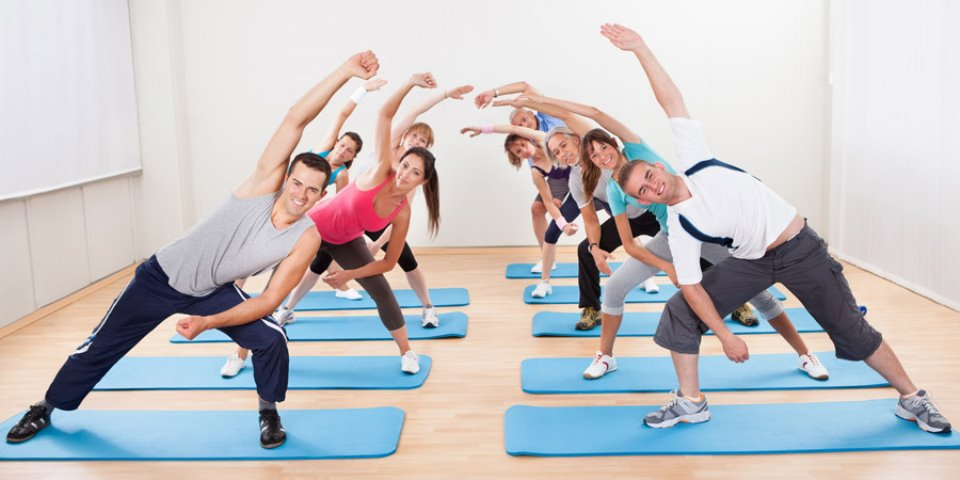
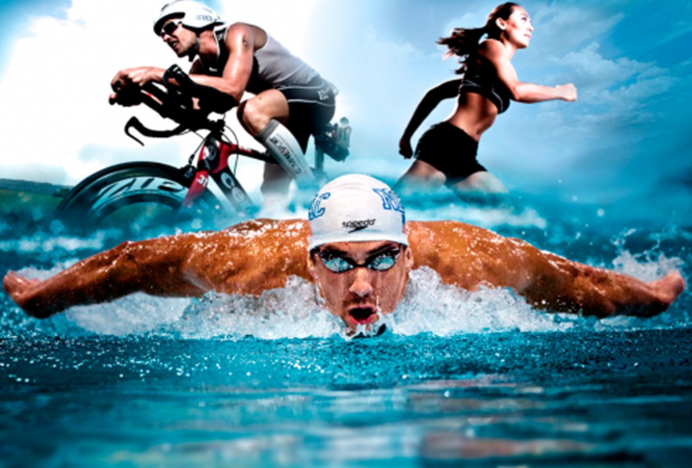
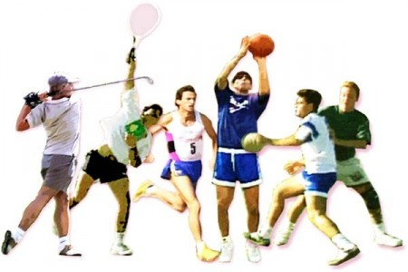
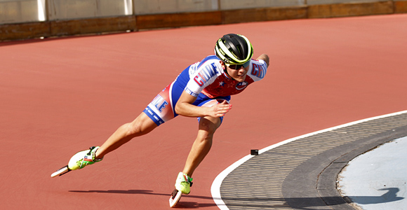
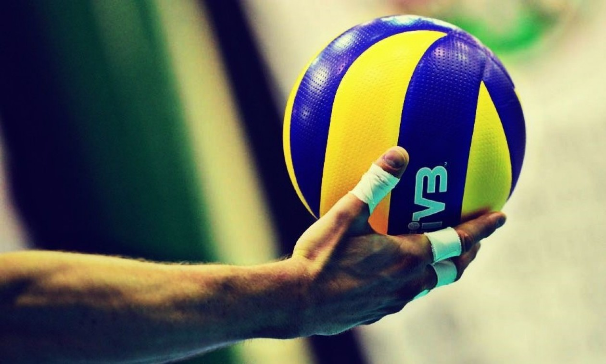
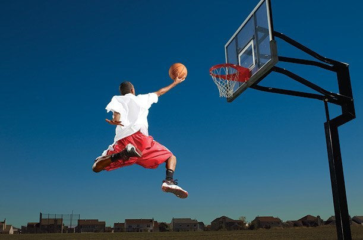
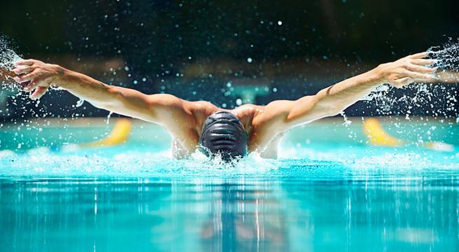
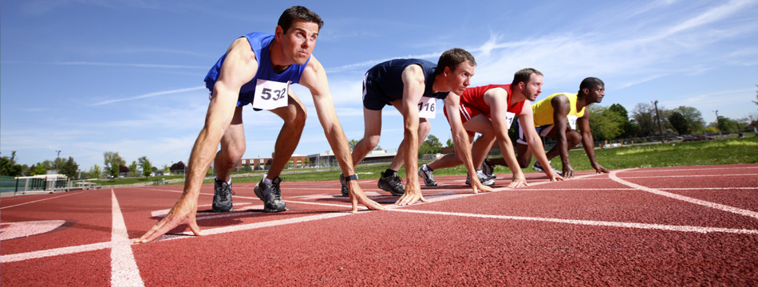
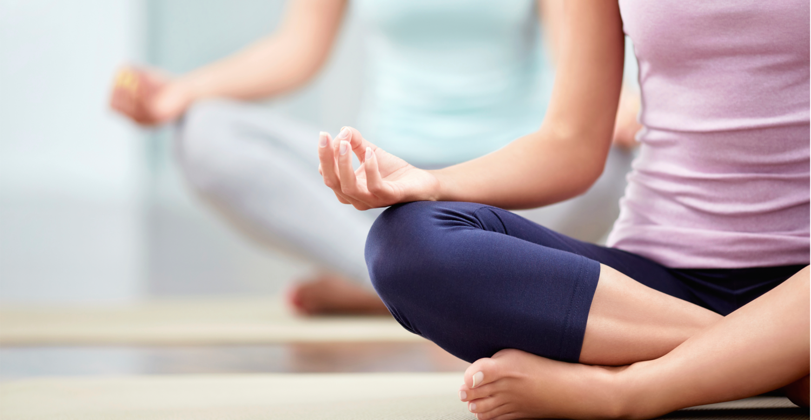

SERVICIOS
Caminatas
 Popayán activa ofrece caminatas todos los sábados y domingos desde las 8 de la mañana a grupos de entre 10 y 20 personas que deseen desconectarse un poco de la rutina y quieran respirar un poco de aire fresco. El punto de encuentro es el CDU de Tulcán y las rutas cambian constantemente, ¡Acelera tus latidos! ¿Te animas?
Actividades aeróbicas
 El Aerobic es un clásico de las clases grupales que se ofrecen en los gimnasios. Se trata de rutinas mediante las cuales, a través del desempeño de una serie de movimientos programados e indicados por el monitor, realizaremos una alto ejercicio en el que implicaremos todas las partes del cuerpo para así conseguir mantenerlas activas y ágiles mientras quemamos calorías.
Maratones y Triatlones
 Periódicamente se realizan Maratones y Triatlones abiertos al público general. Las fechas se establecen para todo el año y hay premiación para los ganadores.
Competencias
 Al igual que los Maratones y Triatlones, las competencias tienen fechas establecidas y son de distintas categorías. Hay premiación. ¡Nunca te rindas!
Patinaje
 El CDU de Tulcán cuenta con pista de patinaje. Se dictan clases grupales y privadas, de tres horas de duración, con horarios flexibles.
Voleibol
 El CDU ofrece clases de voleibol en categorías; femenino y masculino. Los días lunes, miércoles y viernes de 3 a 6 pm.
Fútbol
 El CDU ofrece entrenamiento a todos aquellos que quieran disfrutar de este deporte. Los horarios son de lunes a sábado de
9 a 12 am y de 5 a 8 pm, con entrenadores certificados.
El CDU ofrece entrenamiento a todos aquellos que quieran disfrutar de este deporte. Los horarios son de lunes a sábado de
9 a 12 am y de 5 a 8 pm, con entrenadores certificados.
Baloncesto
 Existen varias canchas para la práctica de este deporte. Las clases son los días martes, jueves y sábado de 5 a 8 pm.
Natación
 Las clases de natación tienen cuatro niveles y cuatro horarios diferentes dependiendo el nivel escogido.
Atletismo
 El Atletismo puede influir en la mayoría de las funciones orgánicas. Todo apunta hacia una mejora general del estado físico y mental. La pista está abierta al público general de 5 am a 9 pm.
Actividades relajantes
 El Yoga es un clásico en este aspecto, y es que con esta actividad conseguiremos un control elevado sobre el cuerpo. Además de esto mejoraremos la flexibilidad del cuerpo y aliviaremos tensiones. Para ello lo que haremos serán diferentes posiciones que pondrán a trabajar todas las partes del cuerpo propiciando la elongación de las mismas y consiguiendo una relajación máxima del cuerpo.